CSE 4106 · Digital Image Processing
Tackling the constraints of storage and bandwidth in the real world.
Why did we choose these three specific algorithms?
Implementation Challenges Overcome
– Fixed OpenCV 16-bit → 8-bit downscaling (cv2.IMREAD_UNCHANGED)
– Solved K-Means freezing on Carina Nebula (MiniBatchKMeans subsampling)
Information Theory: Frequent pixels → short codes, rare pixels → long codes.
Priority Queue — Python
def build_huffman_tree(frequencies):
heap = [HuffmanNode(sym, freq) for sym, freq in frequencies.items()]
heapq.heapify(heap)
while len(heap) > 1:
left = heapq.heappop(heap)
right = heapq.heappop(heap)
merged = HuffmanNode(None, left.freq + right.freq)
merged.left, merged.right = left, right
heapq.heappush(heap, merged)
return heap[0]Eclipse 2 (Highest Redundancy)
CR: 2.56 : 1
Eclipse 1 (Intermediate)
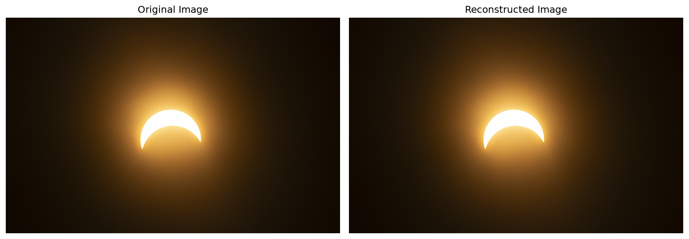
CR: 1.23 : 1
Carina Nebula (Complex)
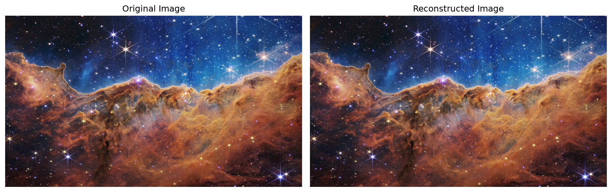
CR: 1.09 : 1
Key Takeaway:
Eclipse 2 achieves a massive CR due to redundant black space (low entropy). In contrast, the Carina Nebula's unique star pixels generate inefficient trees, resulting in a much poorer CR.
Palette Reduction: Restrict millions of 16-bit colors to exactly K colors.
MiniBatch Subsampling — Python
# Bypassing the high-res processing bottleneck
image_array = np.array(image_rgb, dtype=np.float64) / 255.0
pixels = image_array.reshape(-1, 3)
# Randomly sample 100k pixels to train the palette
sampled_pixels = pixels[np.random.choice(pixels.shape[0], 100000, replace=False)]
kmeans = MiniBatchKMeans(n_clusters=K, random_state=42, batch_size=256)
kmeans.fit(sampled_pixels)
# Apply trained centers to full image
labels = kmeans.predict(pixels)
quantized_image = kmeans.cluster_centers_[labels].reshape(image_array.shape)K=4 Colors
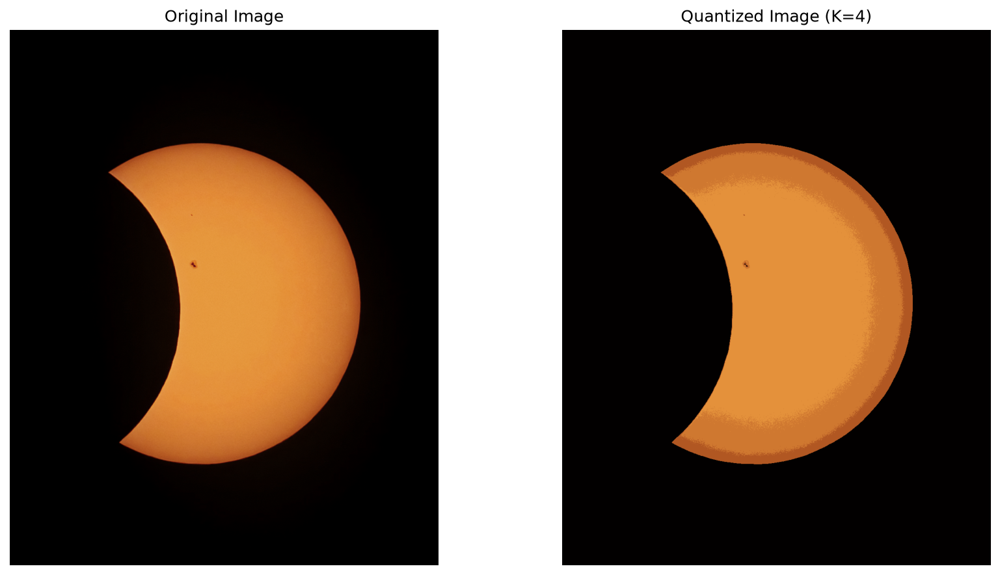
CR: 24.0 : 1 · SSIM: 0.825
K=8 Colors
CR: 16.0 : 1 · SSIM: 0.959
Observation: Notice the severe visual "banding" and posterization artifacts in the dark space when K is aggressively reduced.
K=16 Colors
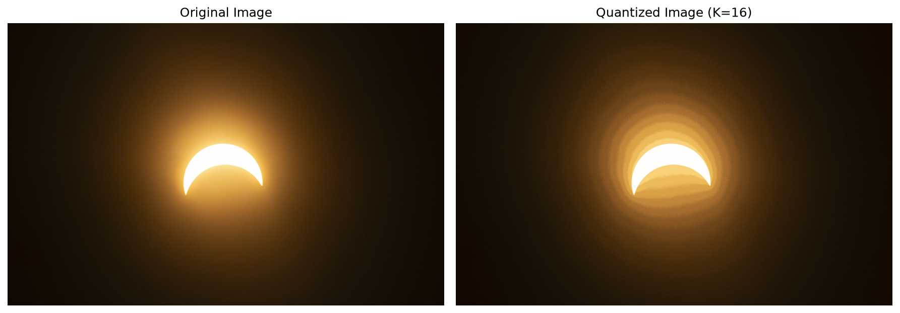
CR: 12.0 : 1 · SSIM: 0.910
K=32 Colors
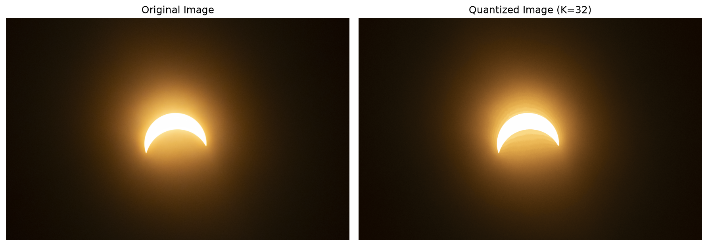
CR: 9.6 : 1 · SSIM: 0.960
Observation: A moderate image reacts reasonably well at higher K, but notice the inverse relationship: as K drops, CR skyrockets, but SSIM strictly crashes.
K=16 Colors
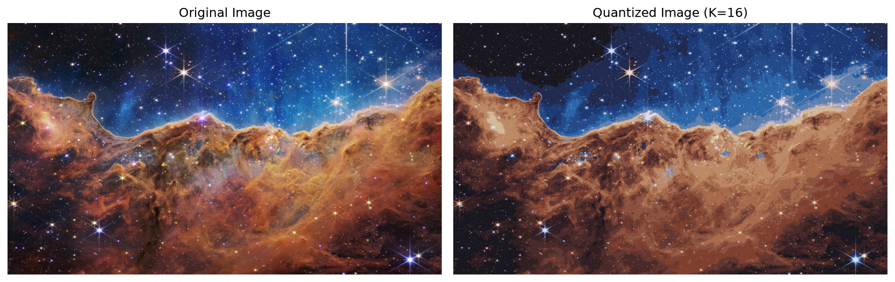
CR: 6.0 : 1 · SSIM: 0.866
K=32 Colors
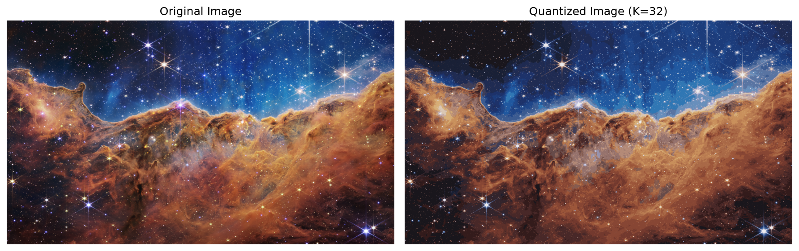
CR: 4.8 : 1 · SSIM: 0.877
Observation: On a high-detail image, K-Means violently clusters out the fine stars and structural details, destroying visual fidelity.
DCT: Drops high frequencies the human eye cannot perceive.
Quantization Data Loss — Python
# DCT separates the block into frequency components
dct_block = cv2.dct(block_f32)
# Quantization: actual data loss occurs here
quantized = np.round(dct_block / q_matrix)
# Dequantization: cannot recover lost decimals
dequantized = quantized * q_matrix
idct_block = cv2.idct(dequantized)QF=10
CR: 597:1 · SSIM: 0.888
QF=50
CR: 418:1 · SSIM: 0.967
QF=90
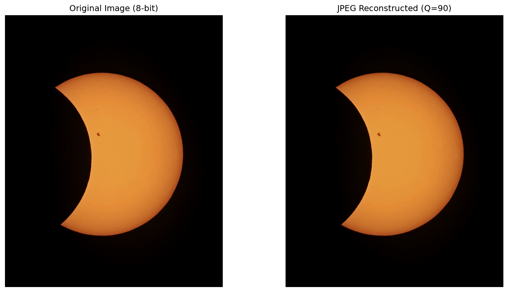
CR: 188:1 · SSIM: 0.977
Observation: Look closely at QF=10—the 8x8 "blockiness" artifacts are extremely visible along the high-contrast edge of the sun.
QF=10
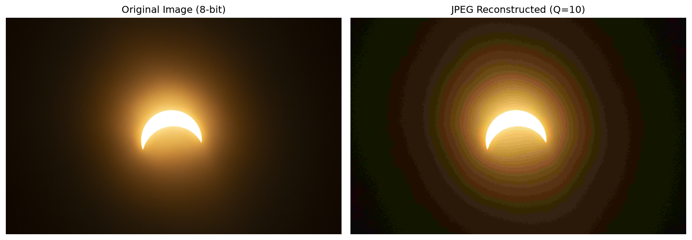
CR: 386:1 · SSIM: 0.732
QF=50
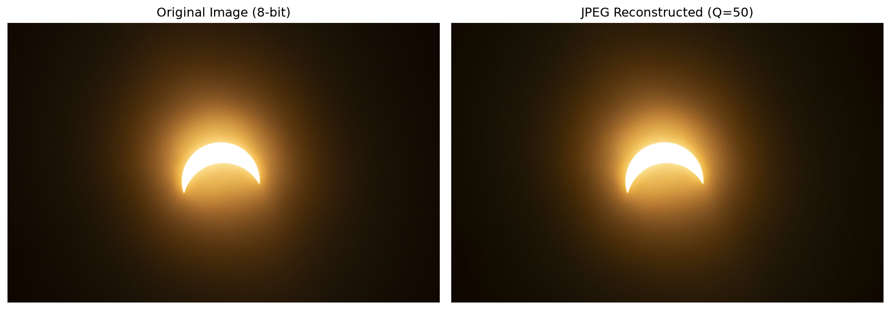
CR: 228:1 · SSIM: 0.886
QF=90
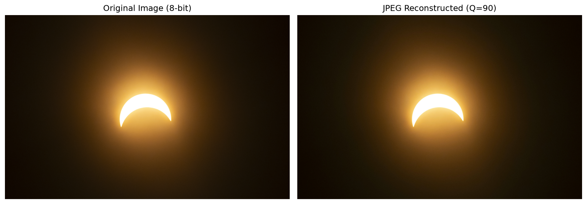
CR: 59:1 · SSIM: 0.951
QF=10
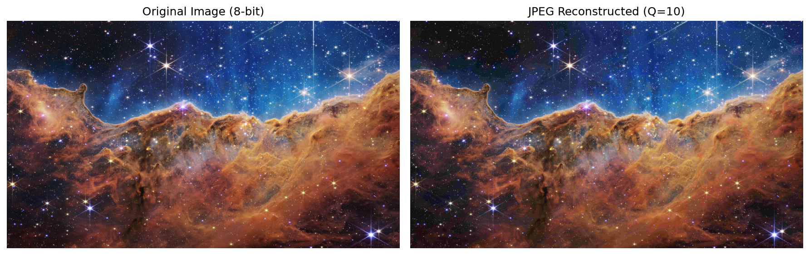
CR: 172:1 · SSIM: 0.877
QF=50
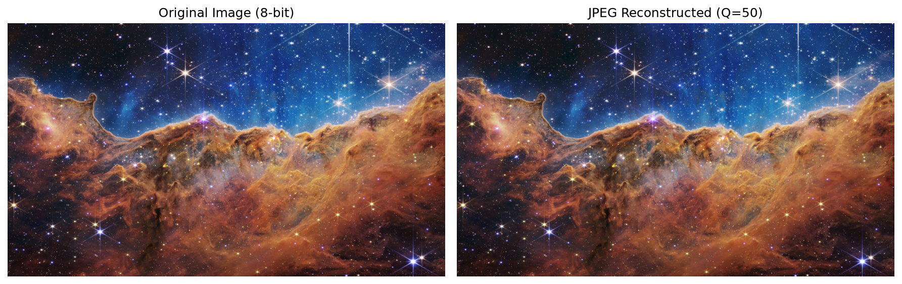
CR: 100:1 · SSIM: 0.953
QF=90
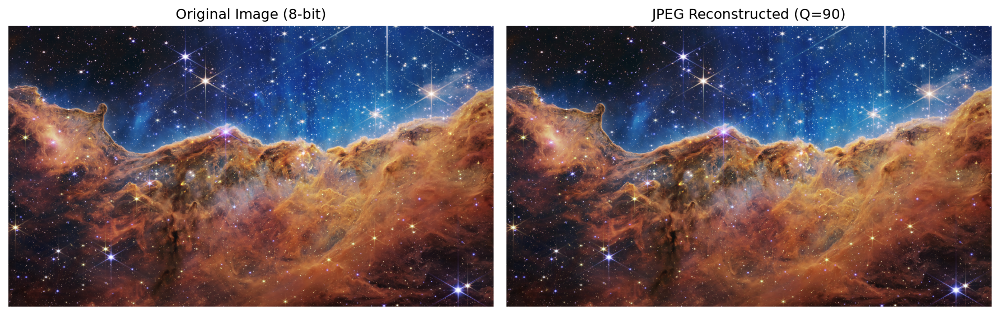
CR: 39:1 · SSIM: 0.975
Key Takeaway: Compared to K-Means, JPEG preserves a much higher SSIM at extreme Compression Ratios because DCT successfully hides data loss in chaotic high-frequency areas.
Comparing algorithm performance across all datasets:
| Eclipse 2 (Highest Redundancy) | Eclipse 1 (Intermediate) | Carina Nebula (Complex) | |
|---|---|---|---|
| Huffman | CR: 2.56:1 SSIM: 1.000 |
CR: 1.23:1 SSIM: 1.000 |
CR: 1.09:1 SSIM: 1.000 |
| K-Means | CR: 24.0:1 (K=4) SSIM: 0.825 |
CR: 12.0:1 (K=16) SSIM: 0.910 |
CR: 6.0:1 (K=16) SSIM: 0.866 |
| JPEG | CR: 418:1 (QF=50) SSIM: 0.967 |
CR: 227:1 (QF=50) SSIM: 0.886 |
CR: 100:1 (QF=50) SSIM: 0.953 |
Key Takeaways:
– Huffman fails exponentially as visual complexity increases.
– K-Means struggles with smooth color gradients, requiring higher K values.
– JPEG dominates in pure ratio/quality tradeoff, consistently delivering >100:1 ratios.
Provides a mathematically guaranteed lossless baseline but fails exponentially on continuous-tone photographs due to the lack of spatial frequency analysis. Strictly suited for raw data archiving.
Successfully isolates dominant colors for synthetic imagery, but introduces harsh banding on smooth photographic gradients unless K is prohibitively high.
The DCT paradigm completely redefines compression by discarding imperceptible high-frequency data, yielding ratios exceeding 100:1 while maintaining excellent perceptual fidelity.
Final Verdict: Huffman is the mandatory choice for archiving raw scientific data where absolute fidelity is required. JPEG is the superior choice for visual web streaming or presentation.